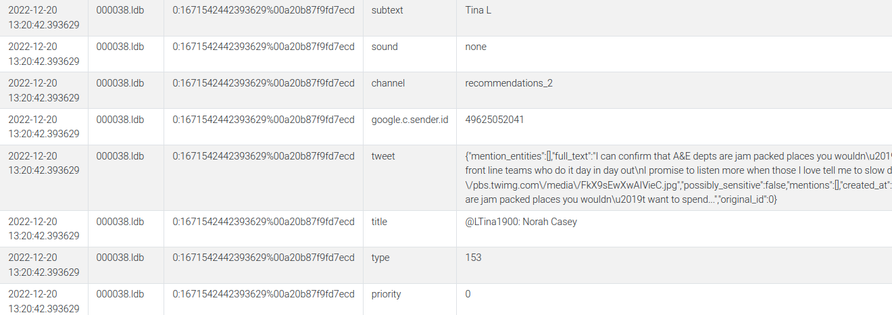
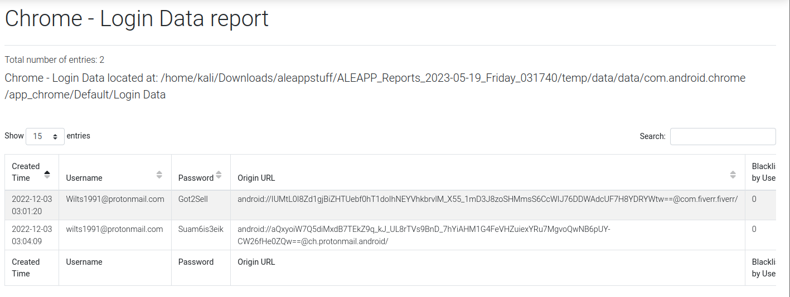
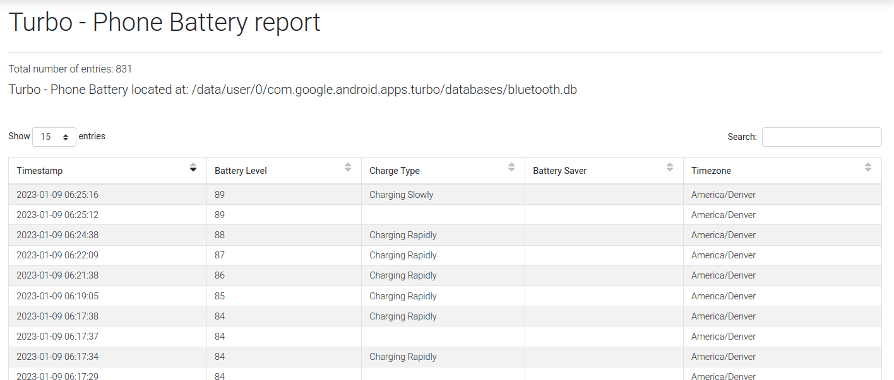

""
Finding Device Information
When conducting Android forensics (be it for this CTF or not :P ), one of the crucial aspects
is gathering device information. Using ALEAPP, I could analyse the system logs, databases and
other artifacts.
Here is an example of the usage of ALEAPP to find the information of
the device:
And this was conveniently the solution for a few CTF challenges too! These pieces of information was found in the index.html file of the data after being processed by ALEAPP.
Finding Account Data
In the realm of Android forensics, uncovering account data can be of paramount importance.
This can encompass information related to accounts (email addresses, usernames, associated services, etc.)
, providing insights into the user's digital footprint.
Through the Accounts_ce report function of the ALEAPP processed data, I could find the twitter handle
and an e-mail account.
To dive further in, the processed data also has information on the Firebase Cloud Messaging (FCM) Queued Messages of the user's twitter activity such as tweets.
Chrome Login Data
With ALEAPP, I was able to derive the Chrome login data of the user, uncovering saved usernames, passwords and associated websites. In the digital forensics aspect, this invaluable information not only sheds light on the user's online accounts but also offers potential avenues for further investigation.
To say the least, I was rather amused that one could derive passwords from just the Logical Data of a device. It's astonishing to think that a seemingly innocuous collection of data could hold such sensitive and personal infromation.
Battery Percentage Information
I was pretty surprised to discover that there was actually data associated with battery percentages in Android devices, and I didn't think that there was any significance of this seemingly mundane piece of information.
However, upon further research, I found out that battery logs can actually be useful, serving as crucial component in reconstructing the timelines of events, uncovering anomalies. It also provides a perspective on the usage patterns and can challenge witness statements or other digital evidence.
Conclusion:
To think that I have only scratched the surface of forensic tools and techniqiues is truly mind-boggling.
I realised that there is so much more to explore and discover, especially with the continuous expansion of the
array of powerful forensic tools available.
It's humbling to consider the vast amount of knolwedge and expertise that
forensic professionals possess in this field, and the more I delve deeper into digital forensics, the more I realise
that I have merely touched the tip of the iceberg.
I have to say though, this realisation fuels my curiousity
and motivates me to continue my journey in the world of digital forensics, and I am more than excited to dive deeper
into the vast sea of forensic tools and techniques.
References:
1. Magnet User Summit CTF'23
2. Magnet Forensics Virtual CTF - Android Challenges Walkthrough (1/?)